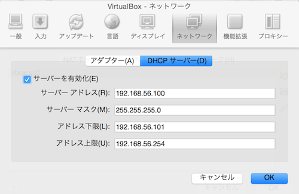

Mac VMを飼うガイド
概要
みんな大好きこれからは廃れるっぽい存在 仮想環境で、
Mac OS X Yosemite VM をMac OS Xの中に作ろうぜみたいなのやってたので纏める。
前提となる環境
OS X Yosemiteが入ってるMacマシンに、Yosemite VM を2台入れるような感じ。
VMを2台以上飼う場合は、Mac OS X のライセンスが別途必要になるはず。
VMの飼育環境を整える
VMの動作環境として、VirtualBoxをインストール。
virtualbox
https://www.virtualbox.org/wiki/Downloads
YosemiteのインストーラをMac AppStoreからDL。
[Install OS X Yosemite.app] てやつ。
Yosemite VM 用のディスクイメージを作り出す
以下の3から先を実施
Install OS X 10.10 Yosemite in VirtualBox
https://gist.github.com/frdmn/de12c894a385bc8e6bff
VMを作成するまえにVirtualBoxで成すべき事
ホストオンリーアダプタを必要な個数だけ作成すること。
VirtualBox > 環境設定 > ネットワーク > ホストオンリーネットワーク を、今後作るVMの数だけ作成しておく。
緑のボタン押すと、vboxnet0 みたいな名前でアダプターが作られるはず。
で、内部設定はこんな感じ。作成されたタイミングでユニークなので、いじらないでOK。


VMが作成用意できたら起動前に速攻でやるべきこと
・起動前に、VirtualBox > 作成したVMの設定 > ネットワーク > アダプター2 の割り当てに、ホストオンリーアダプターを指定。
・名前のとこからvboxnet0とかを選ぶ。

VM起動時に発生するトラブルシュート
Install OS X 10.10 Yosemite in VirtualBox
https://gist.github.com/frdmn/de12c894a385bc8e6bff
に、Missing Bluetooth Controller Transport->対策が描いてあるので対応。
VirtualBoxのGUIからYosemite VMを完全停止して、
VBoxManage modifyvm ‘YosemiteVM’ --cpuidset 1 000206a7 02100800 1fbae3bf bfebfbff
を実行。
VM起動後の設定
起動完了したら以下を行う。
・システム環境設定 > ユーザーとグループ > ログインオプション > 自動ログインをOnに設定する。
homebrewほか、いろいろなところで困るので、空のパスワードを使ってはいけない。
ただし後述の問題が発生すると面倒くさいので、自動ログインはOKのほうが良いと思う。
・システム環境設定 > 共有 > リモートログイン をOnにする
・ホストのsshから入れる事を確認
ここまでくれば、VMに何があっても安心な感じになる。
注意点
GUIからログインできなくなることがある
文字通り、Yosemite VM のログインパスワードをいれても、ログインできなくなる。
具体的に言うと、パスワード入力後、レインボーが回りつづける。
GUI上でのみ発生するのを確認している。
対策としては、
ログイン画面を失くす。起動、即特定ユーザーでログインできる設定にするとか。
もし陥ってしまった場合の解消法としては、
・VMを起動、ログイン前の状態で放置
・ホストからsshでYosemite VMにログイン
・Terminal > passwd でパスワードを変更
・VMを再起動
・新しいパスワードを入れる
とやると、ログインが正常に完了するようになる。
つまりだ、自分はこれで九死に一生みたいな感じになった。